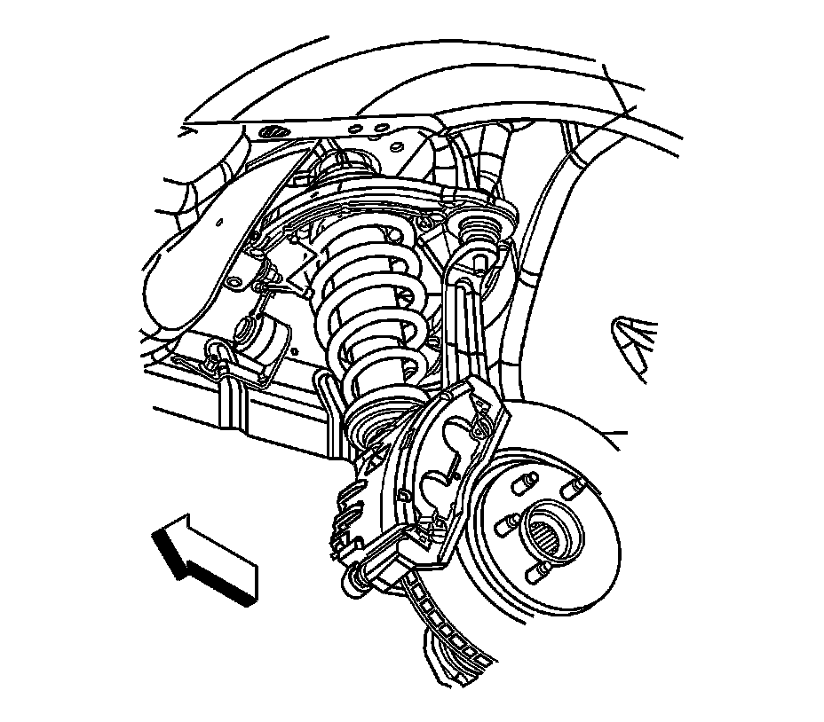
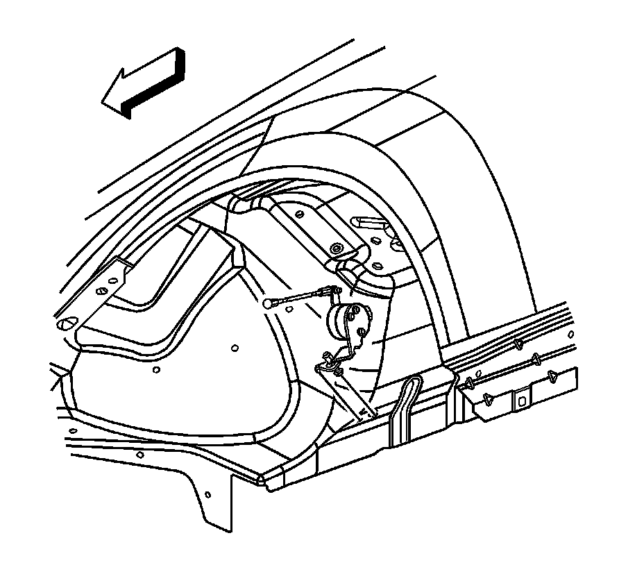

Electronic Suspension Front Position Sensor Replacement
Electronic Suspension Front Position Sensor Replacement
Removal Procedure
1. Raise and support the vehicle. Refer to Lifting and Jacking the Vehicle (Service and Repair) .
2. Remove the tire and wheel. Refer to Tire and Wheel Removal and Installation (Service and Repair) .

3. Disconnect the front ride sensor link from the upper control arm ball stud.
4. Disconnect the front ride sensor harness connector.

5. Loosen the front ride sensor retaining nut.
6. Gently tap the front ride sensor retaining stud in order to loosen the stud to fender connection.
7. Remove the front ride sender from the vehicle.
Installation Procedure
1. Position the sensor to the vehicle.
Notice: Refer to Fastener Notice (Fastener Notice) .
2. Install the front ride sensor retaining nut.
Tighten the nut to 9 N.m (80 lb in).
3. Connect the front ride sensor link to the upper control arm ball stud.
4. Connect the front ride sensor harness connector.
5. Install the tire and wheel. Refer to Tire and Wheel Removal and Installation (Service and Repair) .
6. Lower the vehicle.